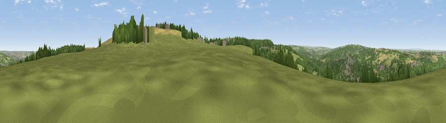

Viewpoint near Burnopfield
#15830 in England · top 33% of its area beats it · near Burnopfield · path 167 mWhere it is
The exact computed spot (NZ 18175 58125). Click the marker for map links.
Public access: the nearest public right of way is about 167 m away — the final stretch may cross private land. Computed from Natural England's CRoW access layer and OpenStreetMap rights of way — not the legal definitive map. Always verify locally.
The view, rendered

A 360° render of this exact spot computed from the terrain model, tree cover and land cover — summer colours, afternoon light, calibrated against photographs of famous viewpoints. Real trees, hedges and buildings will differ in detail.
The panorama
Grey silhouette: terrain skyline in each direction (720 bearings, Earth curvature and refraction included). Dashed green: skyline with trees (+15 m) and buildings (+8 m) as obstacles. Blue strip: how far the ground is visible on each bearing.
Where the view opens
Wedge length = distance to the farthest visible ground on that bearing (vegetation-aware). Rings at 10, 25 and 50 km.
What fills the view
47% grassland · 39% woodland · 8% cropland · 6% built-up
Angular shares of the visible panorama (visual magnitude), not map area. Landscape diversity 0.48 (0–1 Shannon).
Key numbers
More beautiful places nearby
The staircase of upgrades: each row has a higher view potential than everything closer. Driving times are estimates from straight-line distance, calibrated against real road routing — check an actual route before setting out.
| Place | Direction | Drive | Score |
|---|---|---|---|
| Viewpoint near Burnopfield | ESE · 1 km | ~2 min | 75.4 |
| Viewpoint near Sunniside | E · 4 km | ~9 min | 77.6 |
| Pontop Pike | SSW · 6 km | ~13 min | 77.8 |
| Viewpoint near Rothbury | NNW · 43 km | ~63 min | 81.1 |
| Dove Crag | NNW · 43 km | ~63 min | 82.3 |
| Viewpoint near Lazenby | SE · 55 km | ~77 min | 86.4 |
| Warsett Hill | SE · 63 km | ~85 min | 86.8 |
| Viewpoint near Easington | SE · 68 km | ~91 min | 90.2 |
54.91750, -1.71799 · source: screening · position refined by local search. Computed location — check access rights before visiting.